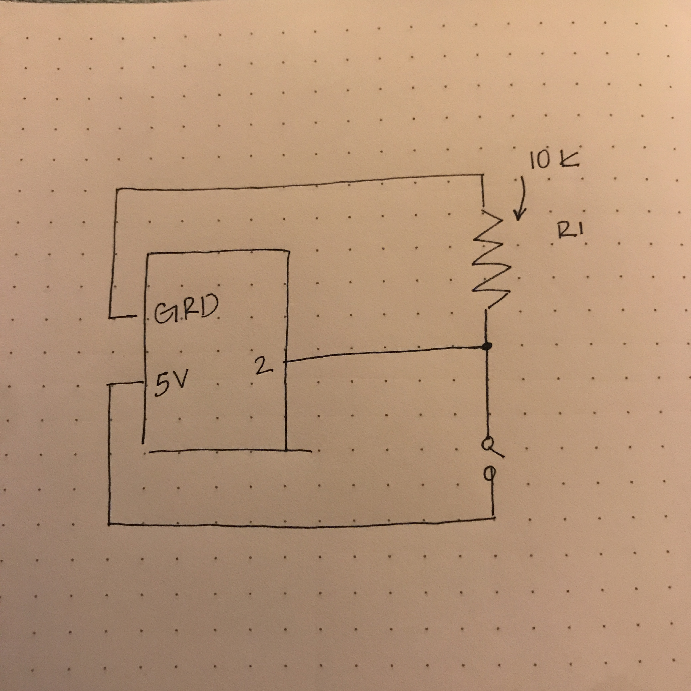
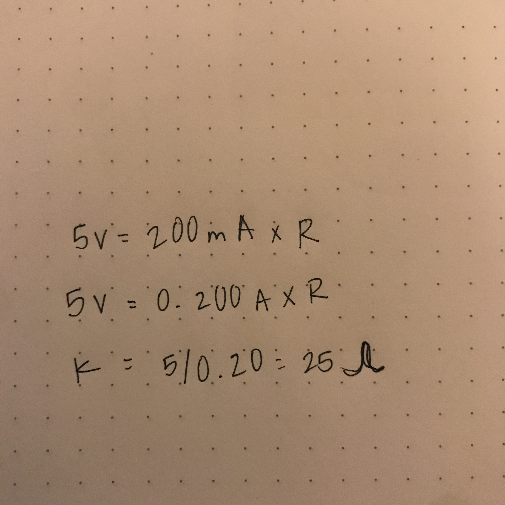
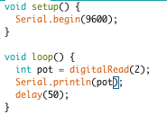

Assignment 6: Datalogging!
By the click of a button, I was able to interact with data that’s coming from our arduino over serial. The output was yes when clicking and no when not clicking!

By the click of a button, I was able to interact with data that’s coming from our arduino over serial. The output was yes when clicking and no when not clicking!
 
var serial; // variable to hold an instance of the serialport library
var portName = '/dev/cu.usbmodem1411' //rename to the name of your port
var datain; //some data coming in over serial!
var xPos = 0;
function setup() {
serial = new p5.SerialPort(); // make a new instance of the serialport library
serial.on('list', printList); // set a callback function for the serialport list event
serial.on('connected', serverConnected); // callback for connecting to the server
serial.on('open', portOpen); // callback for the port opening
serial.on('data', serialEvent); // callback for when new data arrives
serial.on('error', serialError); // callback for errors
serial.on('close', portClose); // callback for the port closing
serial.list(); // list the serial ports
serial.open(portName); // open a serial port
createCanvas(1200, 800);
background(0x08, 0x16, 0x40);
}
// get the list of ports:
function printList(portList) {
// portList is an array of serial port names
for (var i = 0; i < portList.length; i++) {
// Display the list the console:
print(i + " " + portList[i]);
}
}
function serverConnected() {
print('connected to server.');
}
function portOpen() {
print('the serial port opened.')
}
function serialError(err) {
print('Something went wrong with the serial port. ' + err);
}
function portClose() {
print('The serial port closed.');
}
function serialEvent() {
if (serial.available()) {
datain = Number(serial.readLine());
//console.log(datain);
}
}
function draw() {
background(0);
fill(255);
if (datain == 0) {
text("button pressed: NO", 30,30);
} else {
text("button pressed: NO", 30,30);
}
}
